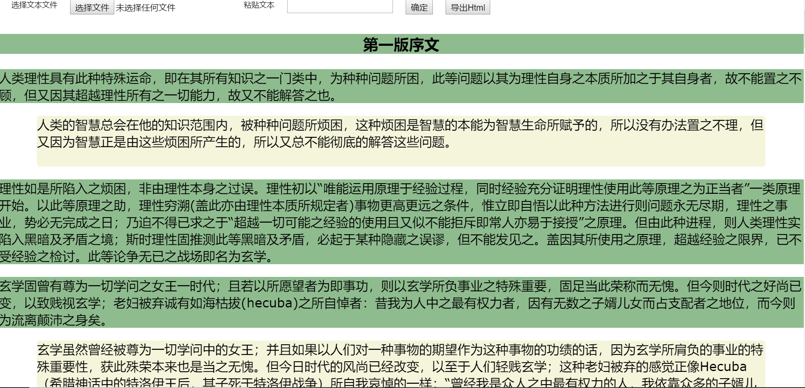

原文连接:https://www.cnblogs.com/ljzc002/p/12048895.html
在网上阅读文章时，读者时常会想针对某段文字写一些自己的感想，可惜大部分阅读网站并不提供这样的功能，读者往往只能将文本复制到本地或在线的编辑器中编辑注释，之后如果想在其他地方回顾这些注释也必须先本地安装或联网登录（云笔记）编辑器。如此操作，麻烦倒在其次，错过灵感才是最让人惋惜的，于是决定编写一个简单的小工具尝试解决这一问题，
一、用法：
用Chrome浏览器打开此工具

点击“选择文本文件”选择txt文件，或者直接将纯文本粘贴到文本框中，点击确定则以绿色背景显示出文本内容，鼠标双击绿色正文段落即在下面弹出黄色注释段落，双击注释段落即可编辑注释内容（正文不可编辑），编辑时点击其他地方即可取消编辑，再次双击绿色正文段落则隐藏本段注释。
点击导出html即可将正文和注释内容保存为一个html文档，用Chrome浏览器打开此html文档即可以查看已经录入的正文和注释，另外这个导出的html文档也具有本工具的所有特性，使用者可以继续编辑注释内容，或者完全替换性的加载新的文本，编辑完毕后又可以导出为新的html文档。
二、编写方法：
1、首先拼一个html结构出来：
1 <!DOCTYPE html>
2 <html lang="en">
3 <head>
4 <meta charset="UTF-8">
5 <title>实用版，处理事件问题</title>
6 <style>
7 /*通用属性*/
8 body{ margin: 0; padding: 0; border: 0; text-align: center; overflow: hidden;width: 100%;
9 height: 100%;position: fixed; font-family: verdana,arial,sans-serif; touch-action: none;
10 -ms-touch-action: none;font-size: 12px;min-width: 600px;}
11 ul { list-style: none; margin: 0; padding: 0;}
12 li{ list-style: none; margin: 0; padding: 0;}
13 ul li { float: left;}
14 button{ cursor: pointer; height: 23px;}
15 a:link{ text-decoration: none;}
16
17 #div_top span,input,button,textarea{margin-left: 20px;float: left;}
18 .p_h1{font-size: 24px;font-weight: bolder;background-color: darkseagreen}
19 .p_text{font-size: 20px;font-weight: normal;text-align: left;background-color: darkseagreen}
20
21 .div_section{position:relative}
22 .p_a1{font-size: 20px;font-weight: normal;text-align: left;background-color: beige;margin-left: 60px;margin-right: 60px;
23 ;min-height: 80px;display: block;word-break: break-all;overflow-wrap: break-word;white-space: pre-wrap}
24 .p_a2{font-size: 20px;font-weight: normal;text-align: left;background-color: beige;margin-left:120px}
25 </style>
26 </head>
27 <body>
28 <div id="div_allbase" style="top:0px;bottom:0px;width:100%;height: 100%;position:relative;overflow-x: hidden;overflow-y: scroll
29 ">
30 <div id="div_top" style="top:0px;left:0px;width:100%;height: 30px;position:absolute;">
31 <span style="margin-left: 20px">选择文本文件</span>
32 <input type="file" id="str_local" onchange="ShowStr()" style="margin-left: 20px">
33 <span style="margin-left: 20px">粘贴文本</span>
34 <textarea type="text" id="str_local2" style="word-break: break-all;overflow-wrap: break-word;white-space: pre-wrap;height:40px"></textarea>
35 <button onclick="ShowStr2()">确定</button>
36 <button onclick="ExportHtml()">导出Html</button>
37 </div>
38 <div id="div_main" style="top:30px;left:0px;width:100%;position:absolute;">
39
40 </div>
41 </div>
42 </body>其中div_top是上面的操作区，div_main用来存放正文段落和注释段落。这里文本框使用textarea标签而非input标签，因为input标签会自动将多行文本的换行符替换为空格，white-space: pre-wrap样式则负责告知textarea标签保留换行符，否则换行符也会被替换掉。
2、将纯文本转换为正文段落：
1 function ShowStr()//从文件读取文本
2 {
3 var str_local=document.getElementById("str_local");
4 var file=str_local.files[0];
5 var reader=new FileReader();
6 reader.readAsText(file);
7 reader.onload=function(e)
8 {
9 var str=e.target.result;
10 loadArticle(str);
11 }
12 }
13 function ShowStr2()//从文本框读取文本
14 {
15 var str_local=document.getElementById("str_local2");
16 var str=str_local.value;
17 loadArticle(str);
18 }
19 var currentSectionid=null;
20 function loadArticle(str)
21 {
22 var div_main=document.getElementById("div_main");
23 div_main.innerHTML="";
24 var arr_section=str.split("\r\n");
25 var len=arr_section.length;
26 if(len==1)//如果按\r\n分段后只有一段
27 {
28 arr_section=str.split("\n");
29 }
30 len=arr_section.length;
31 var count_p=0;//包含主标题在内一共分成几段
32 var arr_p=[];
33 for(var i=0;i<len;i++)
34 {
35 var section=arr_section[i];
36 if(section.length>0)
37 {
38 let div_section=document.createElement("div");
39 div_section.className="div_section";//这样可以更方便的在段内插入元素
40 div_section.id="div_section_"+count_p;
41
42 let p=document.createElement("p");
43 if(count_p==0)//标题段
44 {
45 p.className="p_h1";
46 }
47 else
48 {
49 p.className="p_text";
50 }
51 p.innerHTML=" "+section;
52 p.id="p_section_"+count_p;
53
54 p.ondblclick=function()
55 {
56 addAnnotate(div_section.id);
57 }
58 count_p++;
59 div_section.appendChild(p);
60 div_main.appendChild(div_section);
61 }
62 }
63 }
代码 并不复杂，根据\r\n对文本进行分段（从文本框读取时需要用\n分段），每一段生成对应的html文档插入dom中，每个“section”都有唯一的dom id。目前还没有调试好的是如何在导出导入html时保持每一段前面的四个空格，浏览器会自动将它们去掉。
注意在为批量建立的标签设定事件响应时，需要用let型变量而非var型变量，否则同一循环中定义的所有事件响应都将以循环操作的最后一个标签为目标。
3、双击正文段落时展开注释段落：
1 function addAnnotate(id)
2 {
3 var div_section=document.getElementById(id);
4 currentSectionid=id;//这个好像没用到
5 var children=div_section.childNodes;
6 var len=children.length;
7 if(len==1)//此时还没有第一级注释
8 {
9 let p_a1=document.createElement("p");
10 p_a1.className="p_a1";
11 //点击第一级注释，进行编辑
12 p_a1.ondblclick=function(){openEdit(p_a1)};
13 p_a1.onblur=function(){closeEdit(p_a1)};//失去焦点时关闭注释段的编辑状态
14 div_section.appendChild(p_a1)
15 }
16 else
17 {
18 if(children[1].style.display=="none")//如果当前是隐藏状态
19 {
20 for(var i=1;i<len;i++)
21 {
22 children[i].style.display="block";//显示注释段
23 }
24 }
25 else
26 {
27 for(var i=1;i<len;i++)
28 {
29 var child=children[i];
30 child.style.display="none";//隐藏注释段
31 if(child.className=="p_a1")
32 {
33 closeEdit(child);
34 }
35 }
36 }
37 }
38 }这里根据sectionid找到当前操作的正文段落div，将空白的注释段落插进去。
4、编辑注释及关闭编辑状态：
1 function openEdit(p)
2 {
3 p.style.border="2px solid cornflowerblue";
4 p.style.borderRadius="5px";
5 p.contentEditable="true";
6 }
7 function closeEdit(p)
8 {
9 p.style.border="0px";
10 p.contentEditable="false";
11 //Chrome的默认编辑模式会在p内插入一个div，这个div是用来分行的，空白的换行也会导致div！！
12 // 但在重新导入之后（在取innerHTML导出时尚正常）浏览器会自动把这个div绘制在p的外面！！！！
13 //多次换行是嵌套的！！！！所以简单的替换还不行！！
14 p.innerHTML=p.innerHTML.replace(new RegExp(("<[^>]+>"),"gm"),"@");//如果有连续的多个xml标签
15 p.innerHTML=p.innerHTML.replace(new RegExp(("[@]+"),"gm"),"\r\n");
16 //p.innerHTML=p.innerHTML.replace(new RegExp(("<[^>]+>"),"gm"),"\r\n");
17 //p.innerHTML=p.innerHTML.replace(new RegExp(("<[^/][\\S]{1,5}>"),"gm"),"\r\n");
18 //p.innerHTML=p.innerHTML.replace(new RegExp(("</[\\S]{1,6}>"),"gm"),"");
19 }这里使用了浏览器内置的“contentEditable”属性编辑p标签内容，这样做的一个缺点是浏览器会在用户编辑标签时不受用户控制的插入各种控制格式的标签，而同样的html再次导入浏览器时，又会按照不同的规则自动排列成别的顺序。（类似浏览器的CSS调试，只预期在运行时一次性使用？）
为解决这一问题，我在关闭p标签的contentEditable状态时，用正则表达式清除了所有的xml标签，但这也将导致新的问题——使用者希望写在注释中的xml标签（包括替换符号@）也会被清除掉，不知道有没有更好的方法解决这一问题。
5、导出html文档：
1 function ExportHtml()
2 {
3 var str=str_head+window.document.body.outerHTML+"</html>";
4 var blob=new Blob([str],{//字符串转为二进制流
5 type: "text/plain"
6 })
7
8 var tmpa = document.createElement("a");
9 var p_h1=document.getElementsByClassName("p_h1")[0];
10 tmpa.download = (p_h1?p_h1.innerHTML:"test")+".html";//自动用标题作为文件名
11 tmpa.href = URL.createObjectURL(blob);//用临时的a标签下载
12 tmpa.click();//导出后事件需要重新绑定，或者直接使用innHTML定义？
13 setTimeout(function () {
14 URL.revokeObjectURL(blob);//释放掉流
15 }, 100);
16 }其中str_head包含了html头部内容，加上目前正在编辑的body内容和html结束标签组成导出的html文档，然后转换为二进制文件流用临时a标签下载。
注意，使用.onxx方式绑定的事件并不会随着html文档一起导出，可以选择在打开html时重新绑定事件，或者在建立标签时使用innerHTML而非appendChild方法，直接将事件响应写在innerHTML里
6、重新打开导出的html文档时重新绑定事件：
1 window.onload=function(){
2 //处理导出html的事件有两种思路，一是使用innerHTML定义所有动态生成的标签，二是在每次打开网页时重新绑定事件
3 var div_main=document.getElementById("div_main");
4 var arr_section=div_main.getElementsByClassName("div_section");
5 var len=arr_section.length;
6 for(var i=0;i<len;i++)
7 {
8 let div_section=arr_section[i];
9 var arr_p=div_section.getElementsByTagName("p");
10 var len2=arr_p.length;
11 for(var j=0;j<len2;j++)
12 {
13 let p=arr_p[j];
14 if(j==0)
15 {
16 p.ondblclick=function()
17 {
18 addAnnotate(div_section.id);
19 }
20 }
21 else
22 {
23 p.ondblclick=function(){openEdit(p)};
24 p.onblur=function(){closeEdit(p)};
25 }
26 }
27 }
28 }如此就完成了文章注释编辑器小工具的编写，下面是完整的代码，复制粘贴到一个空白的.html文件中即可使用。


1 <!DOCTYPE html>
2 <html lang="en">
3 <head>
4 <meta charset="UTF-8">
5 <title>实用版，处理事件问题</title>
6 <style>
7 /*通用属性*/
8 body{ margin: 0; padding: 0; border: 0; text-align: center; overflow: hidden;width: 100%;
9 height: 100%;position: fixed; font-family: verdana,arial,sans-serif; touch-action: none;
10 -ms-touch-action: none;font-size: 12px;min-width: 600px;}
11 ul { list-style: none; margin: 0; padding: 0;}
12 li{ list-style: none; margin: 0; padding: 0;}
13 ul li { float: left;}
14 button{ cursor: pointer; height: 23px;}
15 a:link{ text-decoration: none;}
16
17 #div_top span,input,button,textarea{margin-left: 20px;float: left;}
18 .p_h1{font-size: 24px;font-weight: bolder;background-color: darkseagreen}
19 .p_text{font-size: 20px;font-weight: normal;text-align: left;background-color: darkseagreen}
20
21 .div_section{position:relative}
22 .p_a1{font-size: 20px;font-weight: normal;text-align: left;background-color: beige;margin-left: 60px;margin-right: 60px;
23 ;min-height: 80px;display: block;word-break: break-all;overflow-wrap: break-word;white-space: pre-wrap}
24 .p_a2{font-size: 20px;font-weight: normal;text-align: left;background-color: beige;margin-left:120px}
25 </style>
26 </head>
27 <body>
28 <div id="div_allbase" style="top:0px;bottom:0px;width:100%;height: 100%;position:relative;overflow-x: hidden;overflow-y: scroll
29 ">
30 <div id="div_top" style="top:0px;left:0px;width:100%;height: 30px;position:absolute;">
31 <span style="margin-left: 20px">选择文本文件</span>
32 <input type="file" id="str_local" onchange="ShowStr()" style="margin-left: 20px">
33 <span style="margin-left: 20px">粘贴文本</span>
34 <textarea type="text" id="str_local2" style="word-break: break-all;overflow-wrap: break-word;white-space: pre-wrap;height:40px"></textarea>
35 <button onclick="ShowStr2()">确定</button>
36 <button onclick="ExportHtml()">导出Html</button>
37 </div>
38 <div id="div_main" style="top:30px;left:0px;width:100%;position:absolute;">
39
40 </div>
41 </div>
42 </body>
43 <script>
44
45 window.onload=function(){
46 //处理导出html的事件有两种思路，一是使用innerHTML定义所有动态生成的标签，二是在每次打开网页时重新绑定事件
47 var div_main=document.getElementById("div_main");
48 var arr_section=div_main.getElementsByClassName("div_section");
49 var len=arr_section.length;
50 for(var i=0;i<len;i++)
51 {
52 let div_section=arr_section[i];
53 var arr_p=div_section.getElementsByTagName("p");
54 var len2=arr_p.length;
55 for(var j=0;j<len2;j++)
56 {
57 let p=arr_p[j];
58 if(j==0)
59 {
60 p.ondblclick=function()
61 {
62 addAnnotate(div_section.id);
63 }
64 }
65 else
66 {
67 p.ondblclick=function(){openEdit(p)};
68 p.onblur=function(){closeEdit(p)};
69 }
70 }
71 }
72 }
73 function ShowStr()
74 {
75 var str_local=document.getElementById("str_local");
76 var file=str_local.files[0];
77 var reader=new FileReader();
78 reader.readAsText(file);
79 reader.onload=function(e)
80 {
81 var str=e.target.result;
82 loadArticle(str);
83 }
84 }
85 function ShowStr2()
86 {
87 var str_local=document.getElementById("str_local2");
88 var str=str_local.value;
89 loadArticle(str);
90 }
91 var currentSectionid=null;
92 function loadArticle(str)
93 {
94 var div_main=document.getElementById("div_main");
95 div_main.innerHTML="";
96 var arr_section=str.split("\r\n");
97 var len=arr_section.length;
98 if(len==1)
99 {
100 arr_section=str.split("\n");
101 }
102 len=arr_section.length;
103 var count_p=0;//包含主标题在内一共分成几段
104 var arr_p=[];
105 for(var i=0;i<len;i++)
106 {
107 var section=arr_section[i];
108 if(section.length>0)
109 {
110 let div_section=document.createElement("div");
111 div_section.className="div_section";//这样可以更方便的在段内插入元素
112 div_section.id="div_section_"+count_p;
113
114 let p=document.createElement("p");
115 if(count_p==0)//标题段
116 {
117 p.className="p_h1";
118 }
119 else
120 {
121 p.className="p_text";
122 }
123 p.innerHTML=" "+section;
124 p.id="p_section_"+count_p;
125
126 p.ondblclick=function()
127 {
128 addAnnotate(div_section.id);
129 }
130 count_p++;
131 div_section.appendChild(p);
132 div_main.appendChild(div_section);
133 }
134 }
135 }
136 function addAnnotate(id)
137 {
138 var div_section=document.getElementById(id);
139 currentSectionid=id;
140 var children=div_section.childNodes;
141 var len=children.length;
142 if(len==1)//此时还没有第一级注释
143 {
144 let p_a1=document.createElement("p");
145 p_a1.className="p_a1";
146 //点击第一级注释，进行编辑
147 p_a1.ondblclick=function(){openEdit(p_a1)};
148 p_a1.onblur=function(){closeEdit(p_a1)};
149 div_section.appendChild(p_a1)
150 }
151 else
152 {
153 if(children[1].style.display=="none")//如果当前是隐藏状态
154 {
155 for(var i=1;i<len;i++)
156 {
157 children[i].style.display="block";
158 }
159 }
160 else
161 {
162 for(var i=1;i<len;i++)
163 {
164 var child=children[i];
165 child.style.display="none";
166 if(child.className=="p_a1")
167 {
168 closeEdit(child);
169 }
170 }
171 }
172 }
173 }
174 function openEdit(p)
175 {
176 p.style.border="2px solid cornflowerblue";
177 p.style.borderRadius="5px";
178 p.contentEditable="true";
179 }
180 function closeEdit(p)
181 {
182 p.style.border="0px";
183 p.contentEditable="false";
184 //Chrome的默认编辑模式会在p内插入一个div，这个div是用来分行的，空白的换行也会导致div！！
185 // 但在重新导入之后（在取innerHTML导出时尚正常）浏览器会自动把这个div绘制在p的外面！！！！
186 //多次换行是嵌套的！！！！所以简单的替换还不行！！
187 p.innerHTML=p.innerHTML.replace(new RegExp(("<[^>]+>"),"gm"),"@");
188 p.innerHTML=p.innerHTML.replace(new RegExp(("[@]+"),"gm"),"\r\n");
189 //p.innerHTML=p.innerHTML.replace(new RegExp(("<[^>]+>"),"gm"),"\r\n");
190 //p.innerHTML=p.innerHTML.replace(new RegExp(("<[^/][\\S]{1,5}>"),"gm"),"\r\n");
191 //p.innerHTML=p.innerHTML.replace(new RegExp(("</[\\S]{1,6}>"),"gm"),"");
192 }
193
194 function ExportHtml()
195 {
196 var str=str_head+window.document.body.outerHTML+"</html>";
197 var blob=new Blob([str],{
198 type: "text/plain"
199 })
200
201 var tmpa = document.createElement("a");
202 var p_h1=document.getElementsByClassName("p_h1")[0];
203 tmpa.download = (p_h1?p_h1.innerHTML:"test")+".html";
204 tmpa.href = URL.createObjectURL(blob);
205 tmpa.click();//导出后事件需要重新绑定，或者直接使用innHTML定义？
206 setTimeout(function () {
207 URL.revokeObjectURL(blob);
208 }, 100);
209 }
210
211 var str_head="<!DOCTYPE html>\n" +
212 "<html lang=\"en\">\n" +
213 "<head>\n" +
214 " <meta charset=\"UTF-8\">\n" +
215 " <title>实用版</title>\n" +
216 " <style>\n" +
217 " /*通用属性*/\n" +
218 " body{ margin: 0; padding: 0; border: 0; text-align: center; overflow: hidden;width: 100%;\n" +
219 " height: 100%;position: fixed; font-family: verdana,arial,sans-serif; touch-action: none;\n" +
220 " -ms-touch-action: none;font-size: 12px;min-width: 600px;}\n" +
221 " ul { list-style: none; margin: 0; padding: 0;}\n" +
222 " li{ list-style: none; margin: 0; padding: 0;}\n" +
223 " ul li { float: left;}\n" +
224 " button{ cursor: pointer; height: 23px;}\n" +
225 " a:link{ text-decoration: none;}\n" +
226 " \n" +
227 " #div_top span,input,button,textarea{margin-left: 20px;float: left;}\n" +
228 " .p_h1{font-size: 24px;font-weight: bolder;background-color: darkseagreen}\n" +
229 " .p_text{font-size: 20px;font-weight: normal;text-align: left;background-color: darkseagreen}\n" +
230 "\n" +
231 " .div_section{position:relative}\n" +
232 " .p_a1{font-size: 20px;font-weight: normal;text-align: left;background-color: beige;margin-left: 60px;margin-right: 60px;\n" +
233 " ;min-height: 80px;display: block;word-break: break-all;overflow-wrap: break-word;white-space: pre-wrap}\n" +
234 " .p_a2{font-size: 20px;font-weight: normal;text-align: left;background-color: beige;left:120px}\n" +
235 " </style>\n" +
236 "</head>";
237 </script>
238 </html>这个小工具代码不多，功能也不复杂，但我认为比较独特的一点是它像单细胞生物一样在一个文件中实现了信息的“保持”、“显示”、“修改”功能，应该具备一定的可发展性，也欢迎大家在此基础上开源更多功能。
用作例子的文章是康德的《纯粹理性批判》（民国蓝公武译本）（http://book.sbkk8.com/waiguo/chuncuilixingpipan/）
感觉这本书被崇拜者们过誉了，现在更适合作为历史和参考。